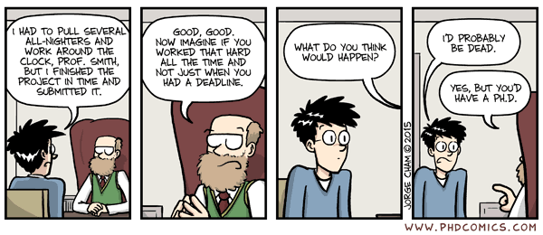

2. Working with data and code
Getting familiar with data handling in R
![]()

“The plural of anecdote is not data.”
— Roger Brinner
In this Chapter we will cover:
- Data file formats
- The use of file extensions
- Review some R code conventions
- Introduce the concept of reproducible research
1 Introduction
In today’s rapidly evolving scientific fields, understanding the basic principles of coding and data handling has become indispensable. As the complexity and volume of data continue to grow, traditional manual data analysis methods are increasingly insufficient to handle the demands of modern research. By acquiring coding and data handling skills, you will unlock the full potential of computational tools and techniques, allowing you to analyse complex datasets, model integrated systems, and uncover hidden patterns that may not be apparent through conventional methods. Moreover, proficiency in coding and data handling will empower you to collaborate effectively with multidisciplinary teams, draw on data from various sources in different formats, bridge the gap between theoretical knowledge and practical applications, and contribute to the advancement of scientific knowledge in a transparent, meaningful, and efficient manner.
2 Types of data files
R will read in many types of data, including spreadsheets, text files, binary files, and files from other statistical packages.
2.1 Comma separated value files
CSV stands for ‘Comma Separated Value’. A CSV file is a simple text file that stores data in a tabular format, with each row representing a record and each column representing a field of data. In a CSV file, each data value is separated by a comma (or sometimes another delimiter such as a semicolon or tab), and each row is terminated by a new line.
CSV files are widely used in data analysis and can be opened and edited by most spreadsheet software, such as MS Excel and Google Sheets. Being comprised of plain text (ASCII), they are often used to import and export data between different applications or systems, as they provide a standardised format that can be easily parsed by software.
CSV files are easy to create and use, and they have the advantage of being lightweight and easy to read and write by both humans and machines. However, they can be limited in their ability to represent complex data structures or to handle large amounts of data efficiently. Additionally, if our data contain certain kinds of special characters, this can cause problems with parsing the file correctly.
We will most frequently use the functions read.csv() or readr::read_csv() (and related forms) for reading in CSV data. We can write CSV files to disk with the write.csv() or readr::write_csv() commands. For very large datasets that might take a long time to read in or save, data.table::fread() or data.table::fwrite() are faster alternatives to the aforementioned base R or tidyverse options. Even faster options are feather::read_feather() and feather::write_feather(); although feather saves tabular data, the format is not actually an ASCII CSV, however.
ASCII stands for “American Standard Code for Information Interchange”. An ASCII file is a plain text file that contains ASCII characters. ASCII is a character encoding standard that assigns a unique numeric code to each character, including letters, numbers, punctuation, and other symbols commonly used in the English language.
ASCII files are the most basic type of text file and are supported by virtually all operating systems and applications. We can create and edit ASCII files using any text editor, such as Notepad, TextEdit, or VS Code. ASCII files are typically used for storing and sharing simple text-based information, such as program source code, configuration files, and other types of data that do not require special formatting or rich media content.
ASCII files are limited in their ability to represent non-English characters or symbols that are not included in the ASCII character set. To handle these types of characters, other character encoding standards such as UTF-8 or Unicode are used. However, ASCII files remain an important and widely used format for storing and sharing simple text-based data.
2.2 Tab separated value files
The primary difference between a ‘tab-separated value’ (TSV) file and a ‘comma-separated values’ (CSV) file lies in the delimiter used to separate data fields. Both file formats are plain text ASCII files used to store data in a tabular format, but they employ different characters to distinguish individual fields within each row.
In a TSV file, the fields are separated by tab characters (represented as \t in many programming languages). This format is particularly useful when dealing with data that include commas within the values, as it avoids potential conflicts and parsing issues.
CSV files are more common and widely supported than TSV files. However, they can present difficulties when the data itself contains commas, potentially causing confusion between actual field separators and commas within the data. To mitigate this issue, values containing commas are often enclosed in quotation marks.
Like CSV files, TSV can also be imported into and exported from spreadsheet software like Excel, or read and manipulated using programming languages like Python, R, and many others. The choice between TSV and CSV largely depends on the nature of the data and personal preferences, but it’s crucial to be aware of the delimiter used in order to accurately parse the files. The same functions that read or write CSV files in R can be used for TSV, but one has to set the arguments sep = "\t" or delim = "\t" for the functions read.csv() and read_csv() respectively.
Where we have missing data (blanks), the CSV format separates these by commas with empty field in-between. However, there can be problems with blanks if we read in a space-delimited format file. If we are having trouble reading in missing data as blanks, try replacing them in the spreadsheet with NA, the missing data code in R. In Excel, highlight the area of the spreadsheet that includes all the cells we need to fill with NA. Do an ‘Edit/Replace…’ and leave the ‘Find what:’ text box blank and in the ‘Replace with:’ text box enter NA. Once imported into R, the NA values will be recognised as missing data.
2.3 Microsoft Excel files
Microsoft Excel files are a type of file format that is used to store data in a tabular form, much like CSV files. However, Excel files are proprietary and are specifically designed to work with Excel software. Excel files can contain more advanced formatting features such as colours, fonts, and formulas, which make them a popular choice for people who like embellishments. But, as much as I dislike Excel as a software for data analysis, Excel files are definitely a good option for data entry.
Using MS Excel for data analysis can be a terrible idea for a number of reasons:
Compatibility Excel files may not be compatible with all data science tools and programming languages. For example, R cannot read Excel files directly.
Data integrity Excel files can be prone to errors and inconsistencies in the data. For example, if a user changes a formula or formatting, it could affect the entire dataset. Also, it is possible for Excel to change the data types of certain columns, or to mix the class of data within a column, which can cause issues with data processing and analysis.
File size Excel files can quickly become very large when dealing with large datasets, which can lead to performance issues and storage problems.
Version control Excel files can make it difficult to keep track of changes and versions of the data, particularly when multiple people are working on the same file.
In contrast, CSV files are a simple, lightweight, and widely supported file format that can be easily used with most data science tools and programming languages. CSV files are also less prone to errors and inconsistencies than Excel files, making them a more reliable choice for data science tasks.
So, while Excel files may be useful for certain tasks such as initial data entry, they are generally not recommended for use in data science due to their potential for errors (see box “Well-known Excel errors”), incompatibility, and other issues. I recommend exporting data deliberately to CSV files. This not only avoids complications, but also allows us to unambiguously identify the data we based our analysis on. This last statement should give us the hint that it is good practice to name our .csv slightly differently each time we export it from Excel, perhaps by appending a reference to the date it was exported. Also, for those of us who use commas in Excel as the decimal separator, or to separate 1000s, undo these features now.
Excel is a widely used spreadsheet application, but it has been responsible for several serious errors in data analysis, science, and data science. Some of these errors include:
Gene name errors In 2016, researchers discovered that Excel automatically converted gene symbols to dates or floating-point numbers. For example, gene symbols like SEPT2 (Septin 2) were converted to “2-Sep” and gene symbols like MARCH1 (Membrane Associated Ring-CH-Type Finger 1) were converted to “1-Mar”. This led to errors and inconsistencies in genetic data, affecting nearly 20% of published papers in leading genomic journals.
Reinhart-Rogoff controversy In 2010, economists Carmen Reinhart and Kenneth Rogoff published a paper arguing that high levels of public debt were associated with lower economic growth. Their findings influenced policy decisions worldwide. However, in 2013, other researchers found that Reinhart and Rogoff’s results were affected by an Excel spreadsheet error that excluded some data points, causing them to overstate the relationship between debt and growth.
London Whale incident In 2012, JPMorgan Chase, a leading financial institution, suffered a trading loss of over $6 billion, partially due to an Excel error. The bank’s model for calculating the risk of their trades, implemented in Excel, used incorrect formulas that significantly underestimated the risk involved. The event, which became known as the “London Whale” incident, highlighted the potential consequences of relying on Excel for complex financial models.
Truncation of large numbers Excel can handle only a limited number of digits for large numbers, truncating any value that exceeds this limit. This truncation has lead to a loss of precision and inaccurate calculations in scientific and data analysis contexts, where exact values were important.
Issues with floating-point arithmetic Excel uses floating-point arithmetic, which can cause rounding errors and imprecise results when working with very large or very small numbers. These inaccuracies can lead to incorrect conclusions or predictions in data analysis and scientific research.
2.4 Rdata files
Rdata files are a file format used by the R programming language to store data objects. These files can contain any type of R object, such as vectors, matrices, dataframes, lists, and more. Rdata files are binary files, which means they are not human-readable like text files such as CSV files. Binary R data files have a .rda or .Rdata file extension and can be created or read using the save() and load(), respectively, functions in R.
Rdata files are convenient for a number of reasons:
Efficient storage Rdata files can be more compact (they can be compressed) and efficient than other file formats, such as CSV files, because they are stored in a binary format. This means they take up less disk space and can be read and written to faster.
Easy access to R objects Rdata files make it easy to save and load R objects, which can be useful for preserving data objects for future analysis or sharing them with others. This is especially useful for complex datasets or objects that would be difficult to recreate.
Preserve metadata Rdata files can preserve metadata such as variable names, row and column names, and other attributes of R objects. This makes it easier to work with the data objects in the future without having to recreate this metadata.
Convenient for reproducibility Rdata files can be used to save and load data objects as part of a reproducible research workflow. This can help ensure that data objects are preserved and can be easily accessed in the future, even if the data sources or code have changed.
On the downside, they can only be used within R, making them a less than ideal proposition when you intend sharing your data with colleagues who sadly do not use R.
2.5 Other binary files
As a biostatistician, you may encounter several other binary data files in your work. Such binary data files may be software-specific and can be used to store large datasets or data objects that are not easily represented in a text format. For example, a binary data file might contain a large matrix or array of numeric data that would be difficult to store in a text file. Binary data files can also be used to store images, audio files, and other types of data that are not represented as text.
One common type of binary data file that you may encounter as a statistician is a SAS data file. SAS is a statistical software package that is widely used in data analysis, and SAS data files are a binary format used to store datasets in SAS. These files typically have a .sas7bdat file extension and contain metadata such as variable names and formats in addition to the data itself. Another type of binary data file you may encounter is a binary .mat data file, which is a file format used to store Matlab data.
When working with binary data files, it is important to be aware of the specific format of the file and the tools and software needed to read and manipulate the data. Some statistical software packages may have built-in functions for reading and writing certain types of binary data files, while others may require additional libraries or packages.
2.6 NetCDF, Grib, and HDF files
NetCDF, HDF, and GRIB are file formats commonly used in the scientific and research communities to store and share large and complex datasets. While CSV files are a simple and widely used format, they can become impractical for large datasets with complex structures or metadata. Here’s a brief overview of each file format:
NetCDF (Network Common Data Form) is a binary file format that is designed for storing and sharing scientific data. It can store multidimensional arrays and metadata, such as variable names and units, in a self-describing format. NetCDF files are commonly used in fields such as atmospheric science, oceanography, and climate modelling.
HDF (Hierarchical Data Format) is a file format that is designed to store and organise large and complex data structures. It can store a wide variety of data types, including multidimensional arrays, tables, and hierarchical data. HDF files are commonly used in fields such as remote sensing, astronomy, and engineering.
GRIB (GRIdded Binary) is a binary file format used to store meteorological and oceanographic data. It can store gridded data, such as atmospheric or oceanic model output, in a compact and efficient binary format. GRIB files are commonly used by weather forecasting agencies and research organisations.
Compared to CSV files, these file formats offer several benefits for storing and sharing complex datasets:
Support for multidimensional arrays These file formats can store and handle multidimensional arrays, which cannot be represented in a CSV file.
Efficient storage Binary file formats can be more compact and efficient than text-based formats such as CSV files, which can save disk space and make it easier to share and transfer large datasets.
Memory use efficiency NetCDF, GRIB, and HDF files are better for memory use efficiency compared to CSV files because they can store multidimensional arrays and metadata in a compact binary format, which can save disk space and memory when working with large and complex datasets. Also, they do not have to be read into memory all at once.
Self-describing metadata These file formats can include metadata, such as variable names and units, which are self-describing and can be easily accessed and understood by other researchers and software.
Support for compression Binary file formats can support compression, which can further reduce file size and make it easier to share and transfer large datasets.
The various efficiencies mention above may be offset by them being quite challenging to work with, and as such novices might experience steep learning curves.
2.7 Larger than memory data
Above we dealt with data that fit into your computer’s memory (RAM). However, there are many datasets that are too large to fit into memory, and as such, we need to use alternative methods to work with them. These methods include:
- Apache Arrow in the
arrowpackage in R, which has support for the ‘feather’ file format and ‘parquet’ files - DuckDB in the
duckdbpackage in R, which create a database on disk and can be queried using SQL
I will develop vignettes for these in the future. We will not use these in this course, but it is important to be aware of them.
3 File extensions
File extensions are three or four character suffixes added to the end of a filename, usually preceded by a period (e.g., ‘.txt’, ‘.jpg’, ‘.pdf’, , ‘.csv’, ‘.txt’, ‘.xlsx’). These extensions indicate the format or type of the file, providing information about the content and structure of the data within the file. Some file extensions are particular to Windows (such as ‘.exe’) and others to MacOS (e.g. ‘.dmg’) but many are transportable across operating systems. File extensions help both the operating system and applications recognise the file type and determine which program or application should be used to open, view, or edit the file.
The default setting for Windows computers is for file extensions to be hidden when files are viewed in the Windows Explorer. This is silly and irresponsible, and a frequent major source of frustration, annoyance, and irritability when I try to help a student with an issue on their computers. Displaying file extensions on your computer is essential for effective data science work because it allows us to quickly identify and manage various file types that we may encounter during our projects.
Some reasons why it’s important to display file extensions if we are to effective use one’s computer in scientific computing applications:
Differentiate file formats When analysing data, you will often work with multiple file formats, such as CSV, TSV, Excel, JSON, and others. By displaying the file extensions you can easily differentiate between these formats so that you may use the most appropriate tools and methods to process and analyse your data.
Prevent errors Knowing the exact file type helps you avoid errors when importing or exporting data, as different formats require specific handling techniques. For instance, using a CSV file reader on a TSV file could lead to unexpected outcomes.
Improve file organisation When working on complex projects, it’s important that you maintain an organised file structure. Being able to see file extensions at a glance helps you keep track of various data files, scripts, and output files, and it will be easier for you to manage your project and ensure its reproducibility.
Enhance security Displaying file extensions can also helps you identify potentially malicious files disguised as legitimate ones. For example, a file with an extension ‘.txt.exe’ might appear to be a harmless text file if the extension is hidden, but it is actually an executable file that could be harmful.
Facilitate collaboration When sharing files with colleagues or collaborators, knowing the file format is essential for smooth communication and seamless collaboration. Displaying file extensions ensures that everyone is aware of the file types being used and can handle them accordingly.
Be a good, decent human and turn on file extensions on our computers.
To display file extensions on your computer, you will need to adjust the settings in our operating system’s file explorer. The specific steps to do this vary depending on whether you’re using: Windows, macOS, or a Linux-based system. A quick online search will provide you with the necessary instructions. Since most people use Windows, I have included the instructions in the box “Displaying file extension in Windows”.
Be a responsible adult and display the file extensions on your computers. To display file extensions in Windows Explorer on the latest version of Windows (assuming Windows 11), follow these steps:
- Open a new File Explorer window by clicking on the File Explorer icon on the taskbar or pressing the ‘Windows key + E’ on your keyboard.
- In the File Explorer window, click on the three horizontal dots in the upper-right corner to open the ‘More options’ menu.
- From the ‘More options’ menu, click on ‘Options’ to open the ‘Folder Options’ window.
- In the ‘Folder Options’ window, switch to the ‘View’ tab.
- Under the ‘Advanced settings’ list, locate the option ‘Hide extensions for known file types’ and uncheck the box next to it.
- Click ‘Apply’ to save your changes, and then click ‘OK’ to close the ‘Folder Options’ window.
Now, the file extensions should be visible for all files in Windows Explorer. Remember that this setting applies to all folders on your computer. If you want to revert to hiding the file extensions, simply follow the same steps and check the box next to ‘Hide extensions for known file types’ in the ‘View’ tab of the ‘Folder Options’ window.
4 R code conventions
When writing code in support of a statistical data analysis in R, it’s important that you adhere to code conventions to ensure your code is tidy, reproducible, and unambiguous. Here are some general guidelines to follow:
Use a consistent coding style Adopt a consistent coding style throughout your codebase to make it easy for others to read and understand your code. R has a widely-accepted style guide called The tidyverse style guide, which you can follow. Also peruse R Style Guide or Google’s R Style Guide with opinionated views of how to use spaces around
<-, after#, after,, and various other stylistics principles, with more guidelines you can adopt to if you want to produce well-structured, well-formatted, and legible code.Write meaningful variable and function names Choose clear, descriptive names for your variables and functions that reflect their purpose. I use lower-case letters and separate words with underscores (e.g.,
average_temperature), but other options are available—see “Naming Variables” below.Indentation and spacing Use consistent indentation (usually two or four spaces) to improve code readability. Place single spaces around operators, commas, and after semicolons in control structures to make your code easier to read.
Comment and document your code Provide comments throughout your code to explain the purpose of particular sections, especially when the code is complex or not self-explanatory. Use the
#symbol to write single-line comments.Modularise your code Break your code into smaller, reusable functions that perform specific tasks. This makes your code more manageable and easier to understand.
Splitting lines of code If you have long lines of code, then you can spread them over multiple lines. You just have to make sure that R knows something is coming, either by leaving a bracket open, or ending the line with an operator (
+inggplot()or the pipe operator%>%in dplyr code.Use version control Utilise version control systems like GitHub to keep track of your code changes and collaborate with others. This practice ensures reproducibility and makes it easy to revert to a previous version if needed.
Organise your project Keep your project files organised in a logical structure. A common approach is to have separate directories for data, scripts, and output. There is also the workflowr package designed specifically for magaging data analysis projects.
Explicitly declare dependencies List and load all the required packages at the beginning of your script. This makes it clear which packages are needed and helps avoid potential conflicts.
Be mindful of absolute vs. relative paths Use relative paths whenever possible, as this makes your code more portable and reproducible across different systems.
Write tests Implement tests to check the correctness of your code and ensure it works as expected. This practice helps catch bugs early and makes your code more robust.
It’s important to note that different programming languages and communities may have their own conventions, and it’s always a good idea to follow the established conventions to make your code more readable and understandable for others. But, whatever you decide to use, be consistent throughout your code. By following guidelines consistently, you will produce clean, well-organised code that is easy to understand and maintain, which is crucial for any data analysis project.
R has pedantic requirements for naming variables. It is safest to not use spaces, special characters (e.g., commas, semicolons, any of the shift characters above the numbers), or function names (e.g., mean). In fact, I strongly suggest never to use spaces in variables, filenames, etc.
In programming, variable names are an essential aspect of writing readable and maintainable code. Good variable naming conventions can make code easier to understand and can even help prevent bugs by making it clear what the variable represents. Here are some commonly used naming conventions and their examples:
Pascal Case (also known as upper camel case) is a convention where the first letter of each word in a variable name is capitalised. This is often used in object-oriented programming to name classes and types. Examples of Pascal case are
SpeciesName,PetalColour, andFunctionalType.Snake Case (also known as ‘snake_case’ or ‘lowercase with underscores’) is a convention where words in a variable name are separated by underscores and all letters are lowercase. This is commonly used in scripting languages and file naming conventions. Examples of Snake case are
species_name,petal_colour, andfunctional_type.Camel Case (also known as ‘lower camel case’) is a convention where the first letter of each word in a variable name is capitalised, except for the first word. This is commonly used in object-oriented programming to name variables and methods. Examples of Camel case are
speciesName,petalColour, andfunctionalType.Hungarian Notation is a naming convention where a prefix is added to the variable name to indicate its data type. This convention is less commonly used in modern programming languages. Examples of Hungarian Notation are
iSpeciesID(where ‘i’ indicates an integer),strPetalColour(where ‘str’ indicates a string), andfSeawaterTemperature(where ‘f’ indicates a floating-point number).
5 Reproducible research
Reproducible research is a critical aspect of scientific integrity and advancement and it is increasingly being applied in the fields of biological and ecological sciences. These disciplines often involve complex analyses and data sets that require meticulous documentation with meta-data, and validation. Reproducible research ensures that results can be independently verified, repeated at a later date by our future selves and the reader audience of scientific publications, thereby improving transparency and minimising errors and biases. An example of some serious consequences stemming from lack of clear communication and transparency is presented in the box “The Mars Climate Orbiter mission in 1998”. Reproducible research practices foster collaboration, and promote the growth of scientific knowledge.
The R and RStudio ‘ecosystem’ offers a comprehensive suite of tools and utilities that facilitate the implementation of reproducible research practices. Key features of this suit of tools include:
Open-source platform R is an open-source programming language with a vast and continually growing library of packages that cater to various research needs. The open-source nature of R promotes transparency and allows us to inspect, reproduce, and modify code to suit our specific requirements.
Version control Integrating R projects with version control systems like Git and platforms like GitHub or GitLab allows us to track changes in our code, share our work, and collaborate more effectively with our colleagues. This practice enables a clear record of code evolution and ensures the reproducibility of analyses across different stages of a project.
Literate programming R Markdown and Quarto, powerful tools within the RStudio IDE, enable us to seamlessly integrate our code, results, and narrative text in a single document. This promotes transparency, documentation, and reproducibility by combining data analysis, visualisation, and interpretation in a human-readable format.
Dynamic report generation R Markdown and Quarto documents can be converted into various output formats, such as HTML, PDF, or Word, facilitating the creation of dynamic, interactive reports and presentations. This feature ensures that any changes to our data or analyses are automatically updated in the final output, maintaining the consistency and accuracy of the results.
Workflow management Tools like workflowr and targets provide us with robust and efficient workflow management solutions for large and complex projects. These packages streamline the process of organising, executing, and caching analytical pipelines, making it easier to reproduce and validate our results.
Containerisation Although beyond the scope of BCB744, it is worth being aware of technologies such as Docker that we can use in conjunction with R and RStudio to create isolated, reproducible environments with specific package versions and dependencies. This enhances portability and ensures that our analyses can be consistently reproduced across different systems.
Data management R provides several packages for data import, manipulation, and storage, within the tidyverse suite of packages. By employing these packages, we can create clean, well-structured data sets that are easier to analyse, understand, and share.
Code testing and validation Packages like testthat enable us to develop and execute ‘unit tests’ for R functions, ensuring the reliability and accuracy of our code. This helps us to identify and resolve potential issues before they impact the overall reproducibility of our research findings.
One of the most famous examples of unclear communication is the Mars Climate Orbiter mission in 1998. NASA lost the spacecraft due to a navigation error caused by a unit conversion mistake. The error occurred because one team used metric units (newtons), while another team used imperial units (pound-force) for a crucial spacecraft operation parameter. The discrepancy in units led to incorrect trajectory calculations, causing the Mars Climate Orbiter to approach Mars at a dangerously low altitude and ultimately disintegrate in the Martian atmosphere.
This incident highlights the importance of clear communication, proper data handling, and rigorous verification processes in mission-critical systems, including space missions. The event emphasises the need for using appropriate tools, software, and methodologies to minimise the risk of errors in complex engineering projects.
Reuse
Citation
@online{smit2021,
author = {Smit, AJ},
title = {2. {Working} with Data and Code},
date = {2021-01-01},
url = {https://tangledbank.netlify.app/BCB744/intro_r/02-working-with-data.html},
langid = {en}
}